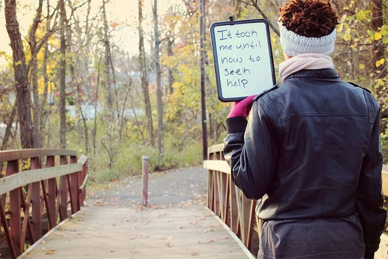

Last summer, I was lying in bed with my laptop on my stomach scrolling through Craigslist, looking at houses. For the past couple of weekends that’s really all I’d been doing: scanning through Craigslist, Zillow, and Trulia of houses for rent, writing down phone numbers, and emailing landlords (many of which did not return with a response). This would be the third time in six years that my family and I have moved from house to house. Each of those previous houses had their fair share of problems. It was either poor construction of the house with slanted floorboards or large cracks in the window sills, a shitty landlord that would take months to even acknowledge these problems, inconsiderate neighbors that would blast 2 Chainz at 3 o’clock in the morning, or all the above. . .at the same damn time. It was just one of those things where you’ve tried to get ahold of the situation and work with these problems, but at the end there’s nothing you could do. Eventually, I’d gotten used to the moving.
It was nothing new on that night. It was just a regular night in bed doing what I did two times before. Out of nowhere, it became hard for me to breathe. Each inhale was more difficult than the last, like forcing air through a pinched straw. At first, I thought it was because I had my laptop on my stomach for too long, not allowing enough oxygen inside of my lungs. I pushed it to the side and sat up on the edge of my bed, but that seemed to make my breathing even worse. I got up from the bed, walked to the bathroom and plopped down on the edge of the tub. Bent over with my elbows on my knees, I was trying to figure out what in the hell was happening to me. I’d never experienced this before. Heat rose from my neck to the rim of my eyes making them water softly. I stood up from the edge of the tub with my hand on my chest. Breathing heavily, the pressure from my chest began getting tighter and I started to cry. I didn’t want to cry. Forcing the tears back formed a hard lump in my throat, and made my heart beat faster than it already was. I didn’t know why I was crying in the first place. I didn’t know it at the time, but I was having a panic attack. Unknowingly, I had suppressed the frustrations of being ignored by our current landlord and the exhaustion of not finding a decent home. I was okay with everything, or at least I tricked myself into thinking I was.
I haven’t been to my therapist in a couple of months. The surprise panic attack gave me more than enough motivation to seek out a therapist, but I hadn’t had any other sudden attacks or woke up most mornings being angry at myself and unsuspecting family members for no obvious reason. I just suddenly stopped going. I strongly give credit to the prescription pills she suggested I take to balance me out and calm my nerves; Fluoxetine for depression and Propranolol for anxiety. Once a day and every day. For some odd reason, a little part of me thought I was fixed or close to it. That phrase sounds rather silly and ignorant. Fixed, like I’m some sort of household appliance that abruptly stopped functioning properly or a car that has tons of mileage on it that could breakdown on the highway at any moment. Breaking down is something that I don’t do very often, but more than enough that I’m willing to accept. I’ve had breakdowns where I would cry at weird and embarrassing times, but never like that night in the bathroom. It just snuck up on me. I shouldn’t even call it a breakdown. My therapist disclosed to me that they are acute panic attacks; the sudden onset of overwhelming anxiety and fear and no, there is nothing cute about it. That is exactly what she said. I could only guess it was her attempt of lightening up the mood. It did not work. These acute panic attacks are sneaky, sneaky little bastards.
Since I was 14 years old, I’ve misunderstood those nights of lying in bed alone and crying myself to sleep because of the unforgiving thoughts in my mind wouldn’t let up. I had failed to acknowledge some days of waking up in the morning in a lousy mood before my feet even touched the floor. For a long while I didn’t know it, but I have what the Diagnostic and Statistical Manual of Mental Disorders (DSM for short) calls Major Depressive Disorder. Let me break this down for you: unlike most people that feel sad or low at some points in their lives, people with MDD are depressed most of the day and have lost interest in the things that they’d once enjoyed. These symptoms of being in a depressive mood lasts every day for at least two weeks. Other symptoms that accompany this depressive mood: not having the energy or the motivation to get up from bed every morning (fatigue), facing people that you don’t know how to interact with without looking awkward so you don’t (anxiety), not eating anything for the whole day because you can’t stop thinking about what other people think about you (worthlessness), therefore making you physically sick to the point where your eating habits are almost nonexistent or over the top for an extended period of time (weight loss and gain). Yes, that’s what individuals like myself go through every single day. I just thought I was stressed out about some insignificant things that I was making into a massive thing, not a chemical imbalance causing problems with my brain function.
There is a kind of humiliation behind mental disorders and psychotherapy preventing individuals from seeking mental health treatment. Many people believe that having a mental illness makes them weak and unpredictable and that if someone finds out about it, they wouldn’t want to be a part of their lives anymore. Clinical psychologist Nikki Massey-Hastings stated that many people feel embarrassed or ashamed of their symptoms because our society places illogical taboos on mental health issues over physical conditions. Mending a broken arm does appear to be more conceivable, then fixing a broken mind, but it isn’t impossible. Many people also believe that they should be able to handle their feelings and situations by themselves without any help, but having an outsider that truly cares about your wellbeing can be very helpful and insightful. Sometimes, just having someone to listen is all that’s needed. Unfortunately, there are some careless outsiders that’s telling someone that they’ll get over it or they’re faking it, which makes it even harder for them to seek help and to openly talk about it. This creates self-doubt, going back and forth with oneself of whether their symptoms are serious enough; thus, stopping them from actively seeking help. They’re not sure what certain feelings or how intense they should be that justifies a therapy session. Many times, I’d fought within myself of deciding if I needed help. The depression didn’t seem urgent enough to me and I thought I could handle it on my own. I kept this extraordinary kind of pain from my mother, my grandmother, and other loved ones. I would try my hardest to ignore the looming darkness; painting on a synthetic happy face when going out, and starting a journal to release the gloomy words that had been boiling inside throughout that day. The journaling did help and I have a great deal of pages filled with real and deep thoughts, but that could only do so much.
Family members could unknowingly make the stresses of dealing with a mental disorder difficult and deter those from seeking professional help. It seems like the most logical and comfortable thing to do is to turn to a loved one, hashing out foreign feels that interrupt your life and intrudes your inner home. But, that isn’t always the case. Loved ones might want to suggest well-meaning, but poor advice on what’s going on with you and how to deal with what’s being felt. People that are suffering with various mental disorders may be told that they’re just going through a phase; repeating that “everything is going to be okay.” I’ve been told by some family members that I’m just a moody person and I need to get over it, but that was before I was diagnosed with depression and anxiety. Since my diagnosis, it opened the dialogue and the minds of my loved ones and made it easier for me to share my inner issues. Sadly, some don’t have that kind of support. Sometimes, the ones that are the closest to you, hurt you the most. If one could cut open oneself, all the emotions, all the feelings would spill out and present themselves. But, it isn’t that simple and it cuts deeper than the skin. It’s hard to face all of that alone, but the hardest part about therapy is walking through the door for the first time, so you won’t have to deal with this alone.
It’s an early September morning and I wake up feeling something that I verbally cannot explain. I manage to gather enough energy and sit on the edge of the bed. Maybe I should just cancel and reschedule for another time. I mean, I’ve waited this long to actually pick up the phone and make an appointment to see a therapist. I look at the blinds hanging from the window next to my bed; pieces of white light shimmering through each slit. I get up, walk to the bathroom, and start getting dressed quickly if I don’t want to be late.
I look at the rain skipping on the passenger window with my hand resting underneath my chin. Maybe it’s the sunless sky or the wet ground. Maybe it’s the chill in the air making the inside and the outside of me feel numb. What will I say when I get there? Oh god, I hope I don’t cry. I haven’t cried in front of anyone for a long time and I don’t want to make it feel even more awkward than I already know it’s going to be. My mother and I are pulling up to a small brick building. My heart is beating so fast that it feels like it could stop at any moment. I turn to look at my mom. She recognizes the uncertainty in my eyes. She lends me a well-needed warm smile and reassures me that I will be okay. The need to be reminded was necessary and comforting. I open the car door and run up to the entrance, hesitant to go inside and face whatever it is on the other side. I take a deep breath, then slowly open the door, and walk in. The hardest part is over.